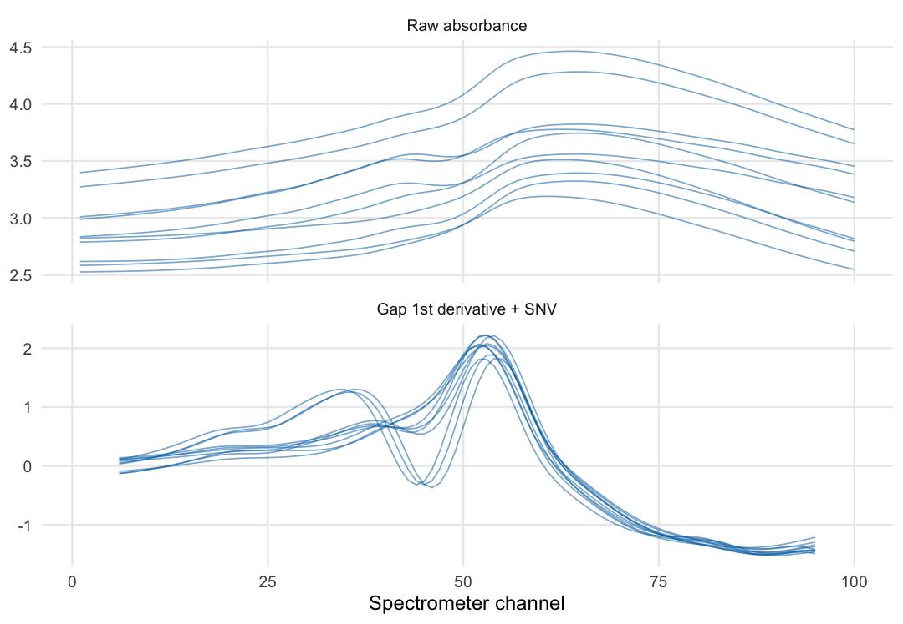

measure brings analytical instrument data (spectroscopy, chromatography, mass spectrometry, and other curve-based measurements) into tidymodels.
Instead of preprocessing spectra in ad-hoc scripts before modeling, you add step_measure_*() steps to a recipes pipeline. Parameters learned from the training set stay inside resampling splits, tunable steps work directly with tune, and the output comes back as an ordinary data frame for modeling or reporting.
Installation
Install the development version from GitHub:
# install.packages("pak")
pak::pak("JamesHWade/measure")Example
The built-in meats_long dataset contains 215 near-infrared (NIR) spectra of meat samples paired with measured water, fat, and protein content (the signal column is named transmittance for compatibility with modeldata::meats, though the values are absorbance).
library(measure)
library(recipes)
data(meats_long)
head(meats_long)
#> # A tibble: 6 × 6
#> id water fat protein channel transmittance
#> <int> <dbl> <dbl> <dbl> <int> <dbl>
#> 1 1 60.5 22.5 16.7 1 2.62
#> 2 1 60.5 22.5 16.7 2 2.62
#> 3 1 60.5 22.5 16.7 3 2.62
#> 4 1 60.5 22.5 16.7 4 2.62
#> 5 1 60.5 22.5 16.7 5 2.62
#> 6 1 60.5 22.5 16.7 6 2.62Convert the long-format curves into measure’s internal representation, take a smoothed first derivative, apply Standard Normal Variate (SNV) scaling, and pivot the processed curves back to wide predictor columns:
rec <- recipe(water + fat + protein ~ ., data = meats_long) |>
update_role(id, new_role = "id") |>
step_measure_input_long(transmittance, location = vars(channel)) |>
step_measure_derivative_gap(gap = 3, segment = 3) |>
step_measure_snv() |>
step_measure_output_wide(prefix = "nir_")
prepped <- prep(rec)
#> Dropping 1 list column for wide output: channel
processed <- bake(prepped, new_data = NULL)
processed[1:5, 1:8]
#> # A tibble: 5 × 8
#> id water fat protein nir_06 nir_07 nir_08 nir_09
#> <int> <dbl> <dbl> <dbl> <dbl> <dbl> <dbl> <dbl>
#> 1 1 60.5 22.5 16.7 -0.125 -0.110 -0.0929 -0.0739
#> 2 2 46 40.1 13.5 0.0335 0.0526 0.0750 0.101
#> 3 3 71 8.4 20.5 0.113 0.121 0.131 0.142
#> 4 4 72.8 5.9 20.7 0.0782 0.0851 0.0931 0.102
#> 5 5 58.3 25.5 15.5 -0.130 -0.116 -0.0990 -0.0797Stopping before step_measure_output_wide() keeps each processed spectrum in the .measures list column, which makes it easy to inspect how the pipeline changed the curves:
library(dplyr)
library(tidyr)
library(ggplot2)
rec_viz <- recipe(water + fat + protein ~ ., data = meats_long) |>
update_role(id, new_role = "id") |>
step_measure_input_long(transmittance, location = vars(channel)) |>
step_measure_derivative_gap(gap = 3, segment = 3) |>
step_measure_snv()
processed_long <- bake(prep(rec_viz), new_data = NULL)
sample_ids <- unique(meats_long$id)[1:10]
raw_plot <- meats_long |>
filter(id %in% sample_ids) |>
transmute(
sample_id = id,
location = channel,
value = transmittance,
stage = "Raw absorbance"
)
processed_plot <- processed_long |>
filter(id %in% sample_ids) |>
transmute(sample_id = id, .measures) |>
unnest(.measures) |>
mutate(stage = "Gap 1st derivative + SNV")
plot_data <- bind_rows(raw_plot, processed_plot) |>
mutate(
stage = factor(
stage,
levels = c("Raw absorbance", "Gap 1st derivative + SNV")
)
)
ggplot(plot_data, aes(location, value, group = sample_id)) +
geom_line(colour = "#0072B2", alpha = 0.55, linewidth = 0.4) +
facet_wrap(vars(stage), ncol = 1, scales = "free_y") +
labs(x = "Spectrometer channel", y = NULL) +
theme_minimal(base_size = 12) +
theme(
plot.background = element_rect(fill = "white", colour = NA),
panel.grid.minor = element_blank()
)
Ten NIR spectra from meats_long before and after a gap first derivative and SNV scaling.
What’s in the package
measure includes over 100 recipe steps and analysis functions. The function reference lists everything; here is how the package is organized:
- Signal preprocessing: baseline correction (ALS, polynomial, SNIP, rolling ball, airPLS, arPLS, morphological), smoothing and derivatives (moving average, Gaussian, median, Savitzky-Golay, wavelet, Fourier, gap derivatives), scatter correction (SNV, MSC, EMSC, OSC), sample normalization, variable scaling, region trimming and resampling, and chromatogram alignment (shift, DTW, PTW, COW).
- Peaks and features: peak detection, integration, filtering, and deconvolution (
step_measure_peaks_*()), plus region integrals, peak ratios, moments, and binning. - Calibration, QC, and method validation: weighted calibration curves (
measure_calibration_fit()), single-analyte LC/GC batch quantitation (measure_quantify_batch()), drift and batch correction, LOD/LOQ, precision and accuracy, Bland-Altman, Deming and Passing-Bablok regression, ISO GUM uncertainty budgets, control charts, and ICH Q2 / bioanalytical acceptance criteria. - Structured records and multi-dimensional signals:
measure_record(),measure_acquisition(), and n-dimensional measurement tables for keeping raw 1D curves, 2D arrays (such as LC-DAD or EEM), and ragged MS scans tied to sample metadata and source files, along with JCAMP-DX import and export.
Practice datasets
The package ships with small datasets for examples and testing:
| Dataset | Technique | Samples | Description |
|---|---|---|---|
meats_long |
NIR | 215 | Meat composition spectra (long format of modeldata::meats) |
bioreactors_small / bioreactors_large
|
Raman | 210 / 42 | Bioreactor glucose monitoring (data(glucose_bioreactors)) |
hplc_chromatograms |
HPLC-UV | 20 | Simulated chromatograms with five compounds |
sec_chromatograms / sec_calibration
|
SEC/GPC | 10 / 5 | Simulated polymer chromatograms and MW standards |
maldi_spectra |
MALDI-TOF | 16 | Simulated mass spectra across four groups |
Companion tools and related packages
- measure.sec adds SEC/GPC detector processing and molecular-weight distribution calculations through measure’s technique pack registry.
- measure-service exposes measure and measure.sec workflows over MCP for automated and assistant-driven lab pipelines.
- The Python package in this repository implements SNV, MSC, and Savitzky-Golay steps for
mlfeatures.
If you work with spectral data in R outside tidymodels, prospectr, ChemoSpec, and mdatools are also worth a look.
Contributing
Bug reports, feature requests, and pull requests are welcome. See the contributing guide to get started.
Please note that measure is released with a Contributor Code of Conduct. By contributing to this project, you agree to abide by its terms.